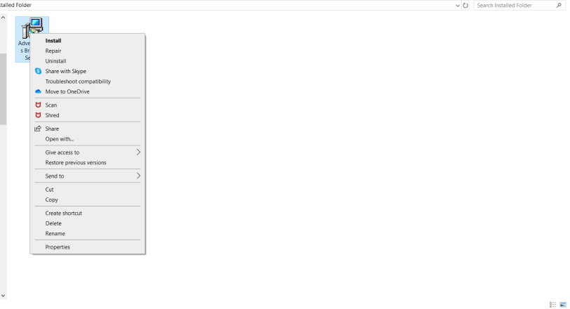
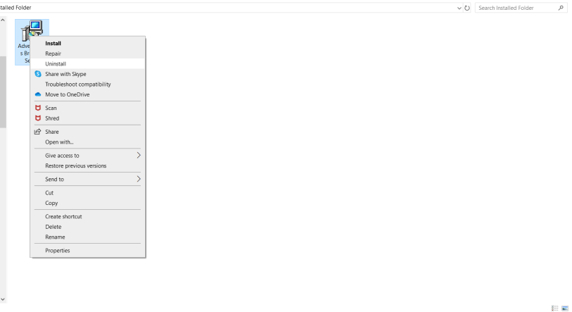
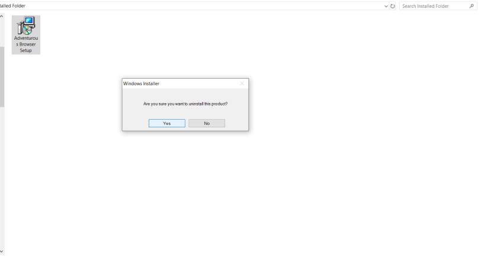

Before downloading a new version, uninstall any previous versions by following the instructions below
Step 1: Right click the .msi file that you used to install the previous version:
Step 2: Click 'Uninstall' from the menu that appears:
When prompted, select 'Yes'
You're all good to go! Here is the most recent version (Windows 10)
Adventurous Browser 4.1.0 Setup